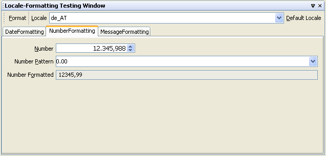

In the tab 'NumberFormatting' you can specify the number format.
The number patterns details described below are extracted from :
DecimalFormat patterns have the following syntax:
Pattern:
PositivePattern
PositivePattern ; NegativePattern
PositivePattern:
Prefixopt Number Suffixopt
NegativePattern:
Prefixopt Number Suffixopt
Prefix:
any Unicode characters except \uFFFE, \uFFFF, and special characters
Suffix:
any Unicode characters except \uFFFE, \uFFFF, and special characters
Number:
Integer Exponentopt
Integer . Fraction Exponentopt
Integer:
MinimumInteger
#
# Integer
# , Integer
MinimumInteger:
0
0 MinimumInteger
0 , MinimumInteger
Fraction:
MinimumFractionopt OptionalFractionopt
MinimumFraction:
0 MinimumFractionopt
OptionalFraction:
# OptionalFractionopt
Exponent:
E MinimumExponent
MinimumExponent:
0 MinimumExponentopt
A DecimalFormat pattern contains a positive and negative
subpattern, for example, "#,##0.00;(#,##0.00)". Each
subpattern has a prefix, numeric part, and suffix. The negative subpattern
is optional; if absent, then the positive subpattern prefixed with the
localized minus sign ('-' in most locales) is used as the
negative subpattern. That is, "0.00" alone is equivalent to
"0.00;-0.00". If there is an explicit negative subpattern, it
serves only to specify the negative prefix and suffix; the number of digits,
minimal digits, and other characteristics are all the same as the positive
pattern. That means that "#,##0.0#;(#)" produces precisely
the same behavior as "#,##0.0#;(#,##0.0#)".
The prefixes, suffixes, and various symbols used for infinity, digits,
thousands separators, decimal separators, etc. may be set to arbitrary
values, and they will appear properly during formatting. However, care must
be taken that the symbols and strings do not conflict, or parsing will be
unreliable. For example, either the positive and negative prefixes or the
suffixes must be distinct for DecimalFormat.parse() to be able
to distinguish positive from negative values. (If they are identical, then
DecimalFormat will behave as if no negative subpattern was
specified.) Another example is that the decimal separator and thousands
separator should be distinct characters, or parsing will be impossible.
The grouping separator is commonly used for thousands, but in some
countries it separates ten-thousands. The grouping size is a constant number
of digits between the grouping characters, such as 3 for 100,000,000 or 4 for
1,0000,0000. If you supply a pattern with multiple grouping characters, the
interval between the last one and the end of the integer is the one that is
used. So "#,##,###,####" == "######,####" ==
"##,####,####".
Many characters in a pattern are taken literally; they are matched during parsing and output unchanged during formatting. Special characters, on the other hand, stand for other characters, strings, or classes of characters. They must be quoted, unless noted otherwise, if they are to appear in the prefix or suffix as literals.
The characters listed here are used in non-localized patterns. Localized
patterns use the corresponding characters taken from this formatter's
DecimalFormatSymbols object instead, and these characters lose
their special status. Two exceptions are the currency sign and quote, which
are not localized.
Symbol Location Localized? Meaning 0Number Yes Digit #Number Yes Digit, zero shows as absent .Number Yes Decimal separator or monetary decimal separator -Number Yes Minus sign ,Number Yes Grouping separator ENumber Yes Separates mantissa and exponent in scientific notation. Need not be quoted in prefix or suffix. ;Subpattern boundary Yes Separates positive and negative subpatterns %Prefix or suffix Yes Multiply by 100 and show as percentage \u2030Prefix or suffix Yes Multiply by 1000 and show as per mille value ¤(\u00A4)Prefix or suffix No Currency sign, replaced by currency symbol. If doubled, replaced by international currency symbol. If present in a pattern, the monetary decimal separator is used instead of the decimal separator. 'Prefix or suffix No Used to quote special characters in a prefix or suffix, for example, "'#'#"formats 123 to"#123". To create a single quote itself, use two in a row:"# o''clock".
Numbers in scientific notation are expressed as the product of a mantissa
and a power of ten, for example, 1234 can be expressed as 1.234 x 10^3. The
mantissa is often in the range 1.0 <= x < 10.0, but it need not be.
DecimalFormat can be instructed to format and parse scientific
notation only via a pattern; there is currently no factory method
that creates a scientific notation format. In a pattern, the exponent
character immediately followed by one or more digit characters indicates
scientific notation. Example: "0.###E0" formats the number
1234 as "1.234E3".
"0.###E0 m/s".
"##0.#####E0". Using this pattern, the number 12345
formats to "12.345E3", and 123456 formats to
"123.456E3".
"00.###E0" yields
"12.3E-4".
"##0.##E0" is "12.3E3". To show all digits, set
the significant digits count to zero. The number of significant digits
does not affect parsing.
DecimalFormat uses half-even rounding (see
BigDecimal.ROUND_HALF_EVEN) for
formatting.
DecimalFormat uses the ten consecutive
characters starting with the localized zero digit defined in the
DecimalFormatSymbols object as digits. For parsing, these
digits as well as all Unicode decimal digits, as defined by
Character.digit, are recognized.
NaN is formatted as a single character, typically
\uFFFD. This character is determined by the
DecimalFormatSymbols object. This is the only value for which
the prefixes and suffixes are not used.
Infinity is formatted as a single character, typically
\u221E, with the positive or negative prefixes and suffixes
applied. The infinity character is determined by the
DecimalFormatSymbols object.
Negative zero ("-0") parses to
BigDecimal(0) if isParseBigDecimal() is
true,
Long(0) if isParseBigDecimal() is false
and isParseIntegerOnly() is true,
Double(-0.0) if both isParseBigDecimal()
and isParseIntegerOnly() are false.